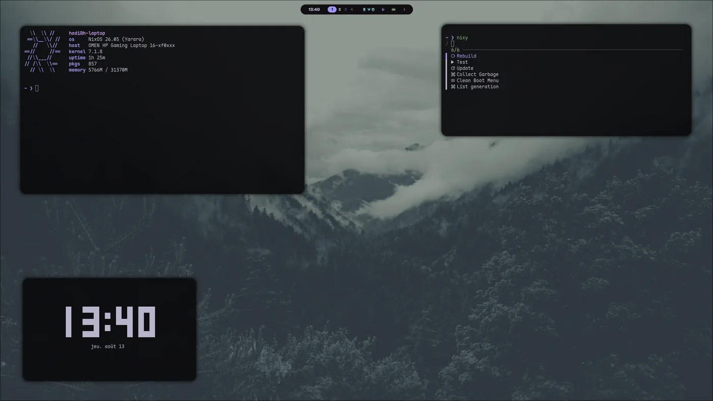
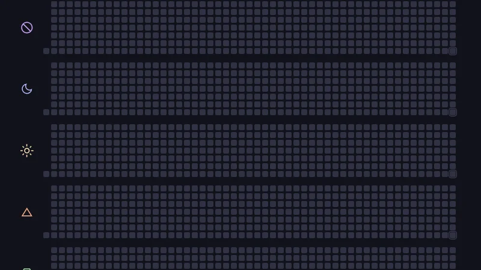
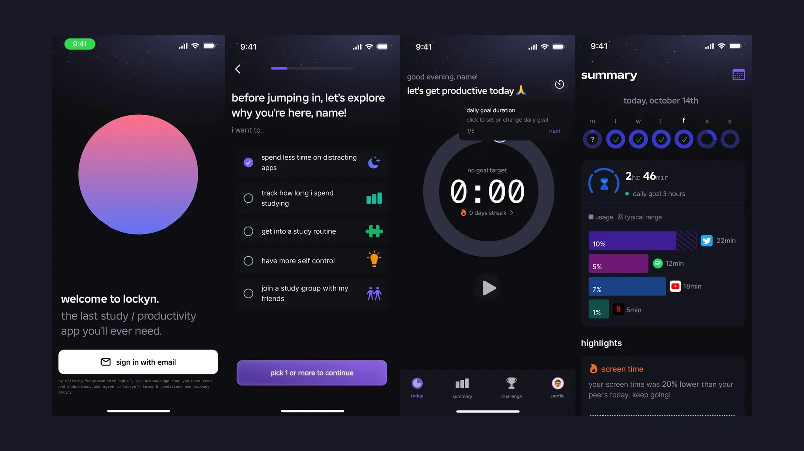
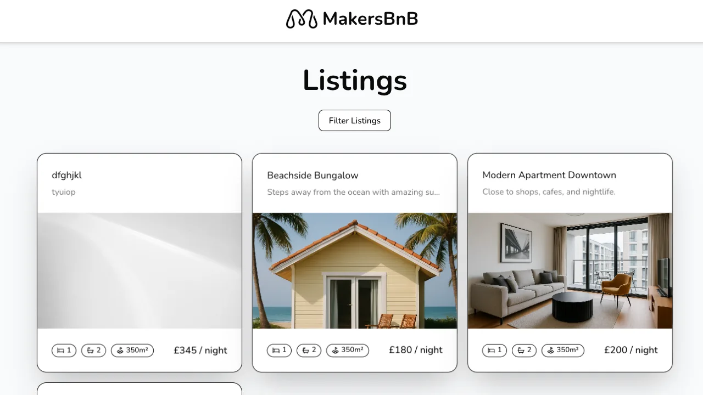
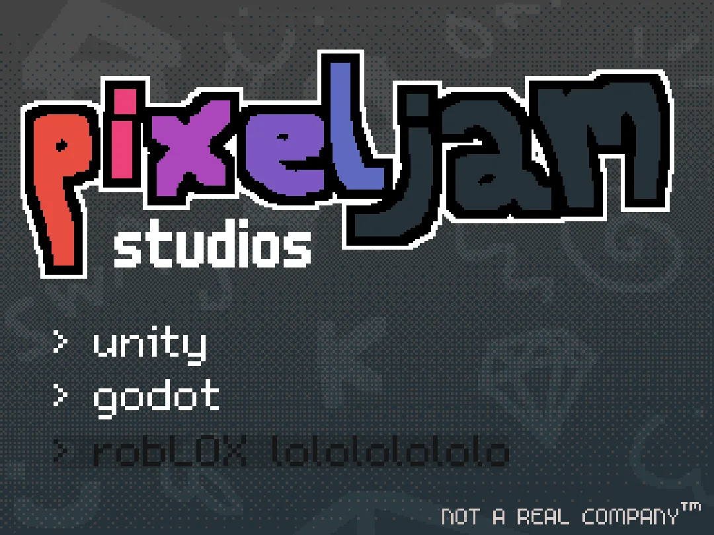
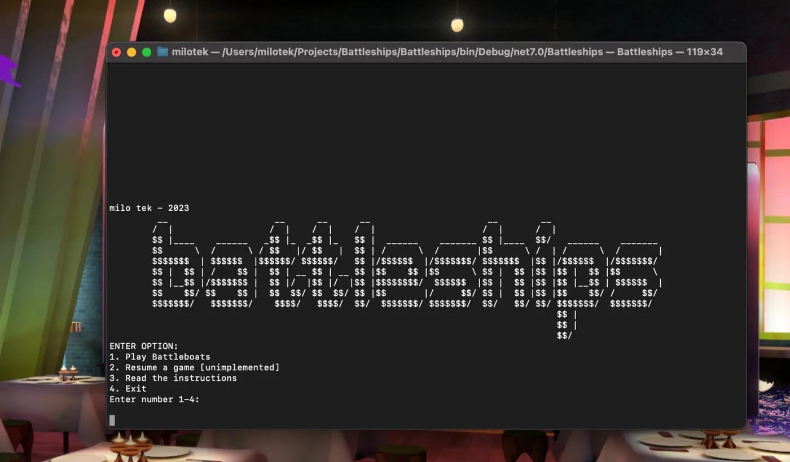
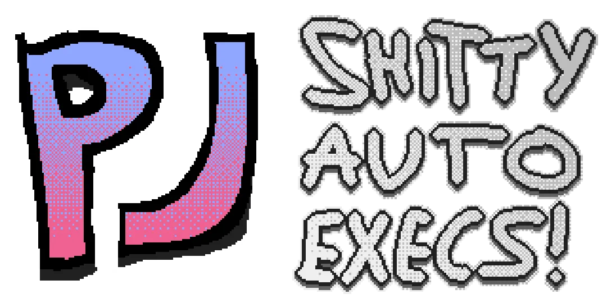

Projects
Everything worth showing, newest first-ish. Source for most of it is on GitHub.

nixeljam 2026
One Nix flake for my desktop, a self-hosting mini PC, a VPS and a work Mac. Hyprland, base16 theming and a stack of server modules.

habits 2026
A habit tracker that renders as a GitHub-style activity grid, for a wall-mounted kiosk. Kotlin, Ktor and SQLite in two files.

Legacy Console shaders 2026
A GLSL shader pack that makes Minecraft Java 1.6.4 look like Legacy Console Edition.

Lockyn 2025
A study and screen-time app for GCSE and sixth form students. React Native and TypeScript on the front, Firebase behind it.

MakersBNB 2025
An Airbnb clone in Flask and Basecoat UI, built test-first by a team of six at Makers. List a space, request a booking, manage the requests.

Pixeljam Studios 2025
The GitHub org where my friends and I build game engines. ROXOR for Roblox, neosource for Unity, and a Godot one on the way.
Acebook 2025
A Facebook clone in Java and Spring Boot with Thymeleaf, Flyway migrations on Postgres, Auth0 login and Selenium feature tests.
CollisionSounds 2025
A Roblox module that gives parts material-specific impact sounds, with soft and hard hits picked by speed.

C# game collection 2024
Battleships, Tetris and Blackjack in .NET. One text-based, one terminal UI, one WinForms, made while learning C# at college.
AutoPet Feeder
A Raspberry Pi pet feeder built to a neighbour's spec, with a touchscreen, a servo and a 3D printed shell finished in oak.
notITG charts 2025
A pack of StepMania modcharts for notITG, with Lua mods and GLSL shaders. Three songs so far.

Game configs 2025
My autoexecs for Valve games, kept in one repo with a Python script that pulls them out of each game's cfg folder.
EPQ platformer 2024
An accessibility-focused 3D platformer in Godot, built over six months of weekends for my Extended Project Qualification.
CarSwap 2025
A Lua script for the Stand menu that lets add-on cars behave like official GTA Online vehicles, garage, saving, mods and all.
punchdrunk.gg 2025
The website for my Minecraft server. A Python script turns a folder of gifs into a page.